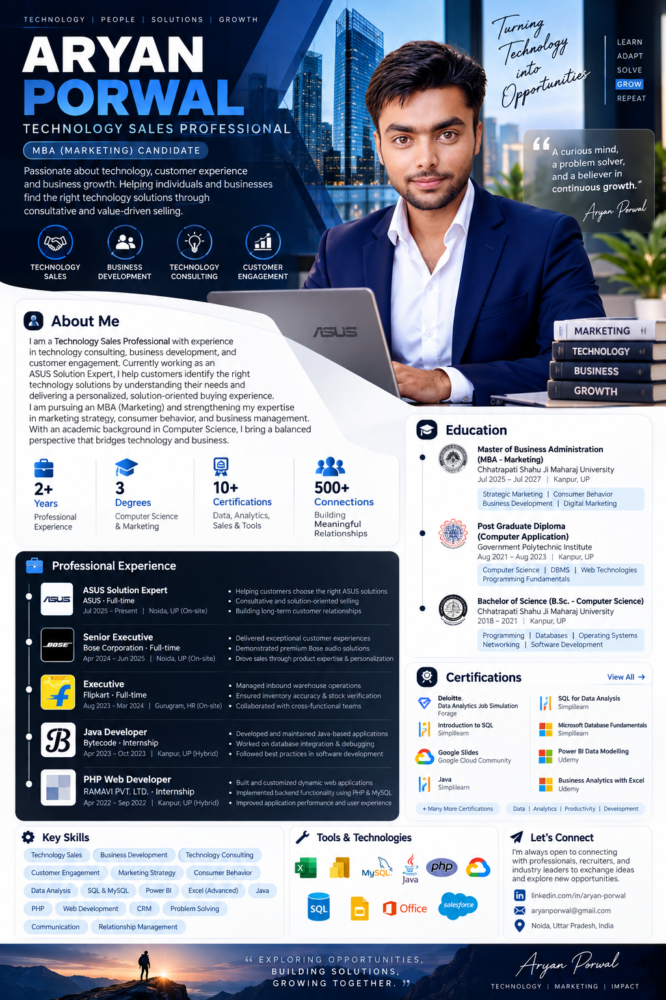

Technology Sales
Value-driven product discovery, solution selling and customer conversion.
Turning technology into opportunities through consultative selling, customer experience, business development and continuous growth.

A curious mind, a problem solver, and a believer in continuous growth.
— Aryan PorwalA bridge between
I am a Technology Sales Professional with experience in technology consulting, business development and customer engagement. As an ASUS Solution Expert, I help customers identify the right technology solutions by understanding their needs and delivering a personalized, solution-oriented buying experience.
I am pursuing an MBA in Marketing and strengthening my expertise in marketing strategy, consumer behavior and business management. With an academic background in Computer Science, I bring a balanced perspective that connects technology with business outcomes.
Value-driven product discovery, solution selling and customer conversion.
Relationship building, opportunity discovery and long-term customer value.
Personalized experiences that turn product conversations into trust.
Translating technical features into practical business and customer benefits.
Experience across technology, premium audio, e-commerce and software.
ASUS · Full-time · Noida, UP
Bose Corporation · Full-time · Noida, UP
Flipkart · Full-time · Gurugram, HR
Bytecode · Internship · Kanpur, UP
RAMAVI PVT. LTD. · Internship · Kanpur, UP
A hybrid profile combining technology, sales and marketing.
MBA — Marketing · Chhatrapati Shahu Ji Maharaj University, Kanpur
Strategic Marketing · Consumer Behavior · Business Development · Digital MarketingPGDCA — Computer Application · Government Polytechnic Institute, Kanpur
Computer Science · DBMS · Web Technologies · Programming FundamentalsB.Sc. — Computer Science · Chhatrapati Shahu Ji Maharaj University, Kanpur
Programming · Databases · Operating Systems · Networking · Software DevelopmentAlways open to connecting with professionals, recruiters and industry leaders to exchange ideas and explore new opportunities.